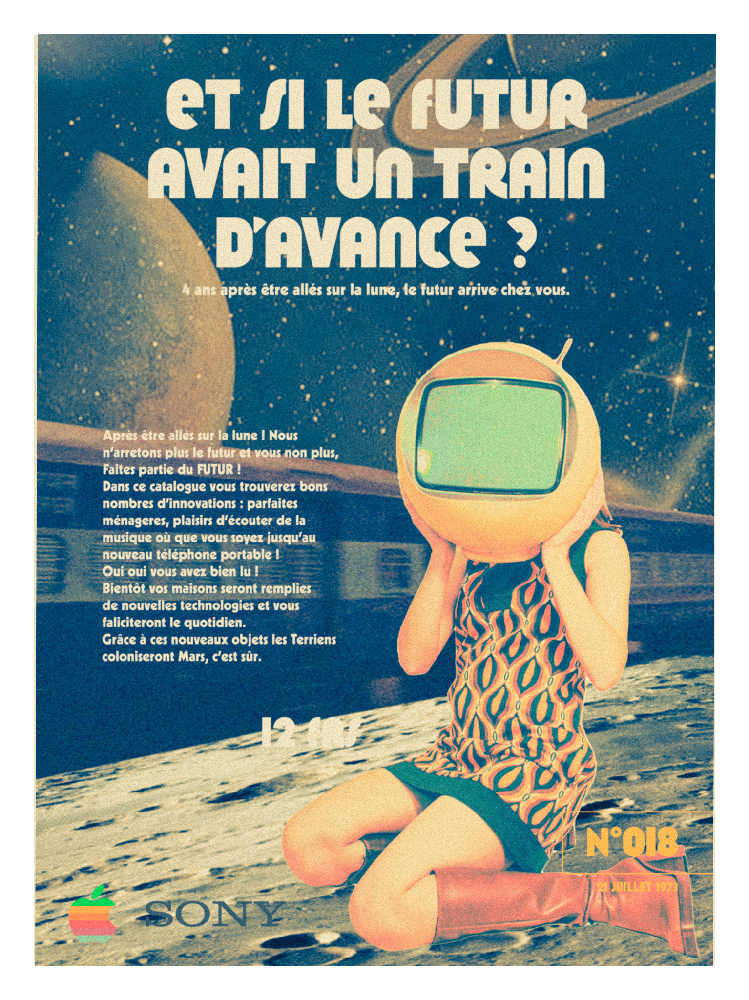
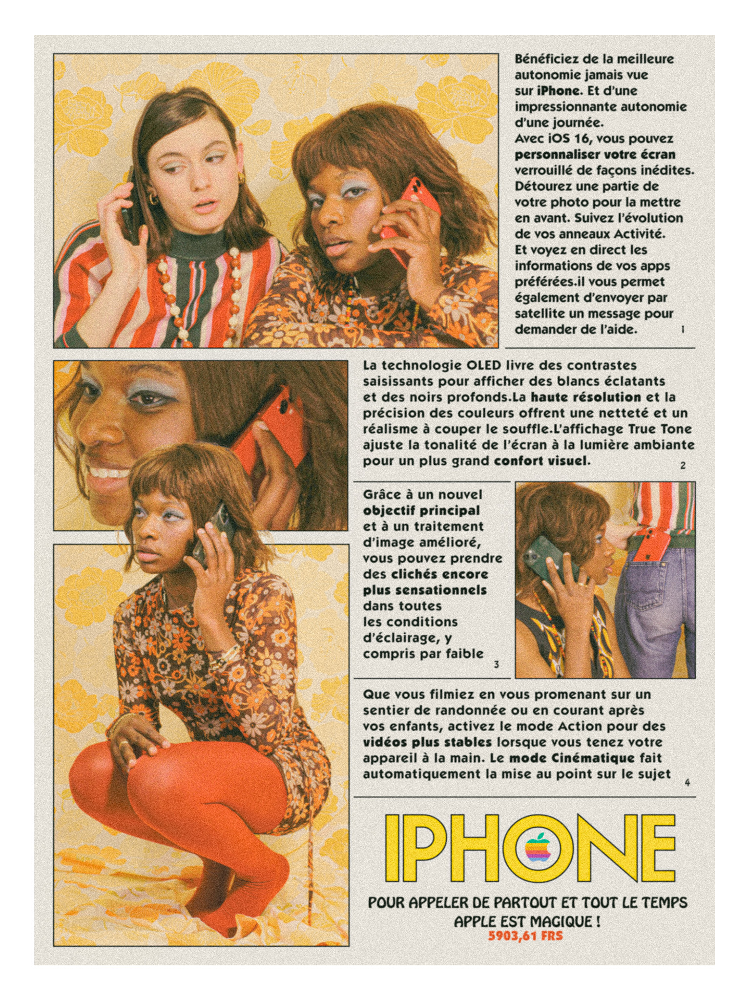
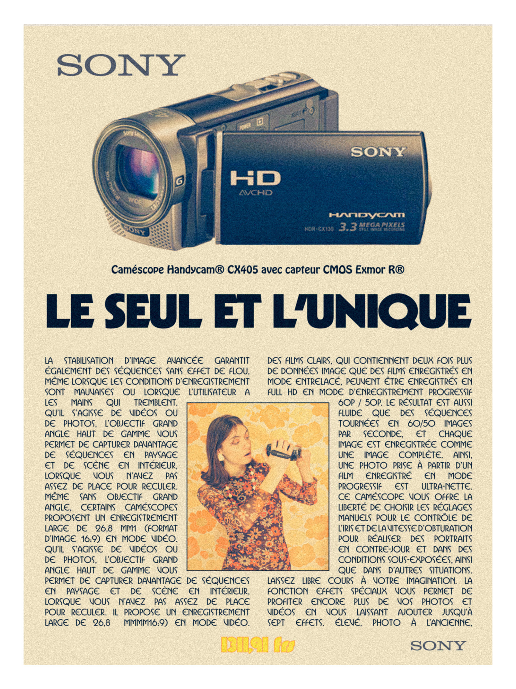
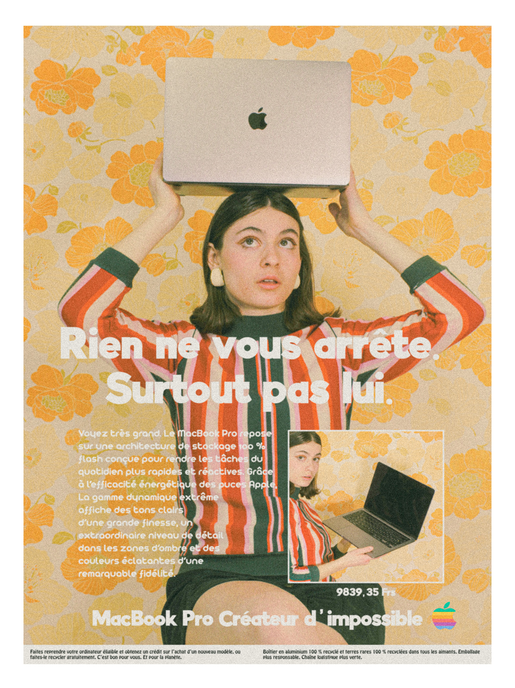
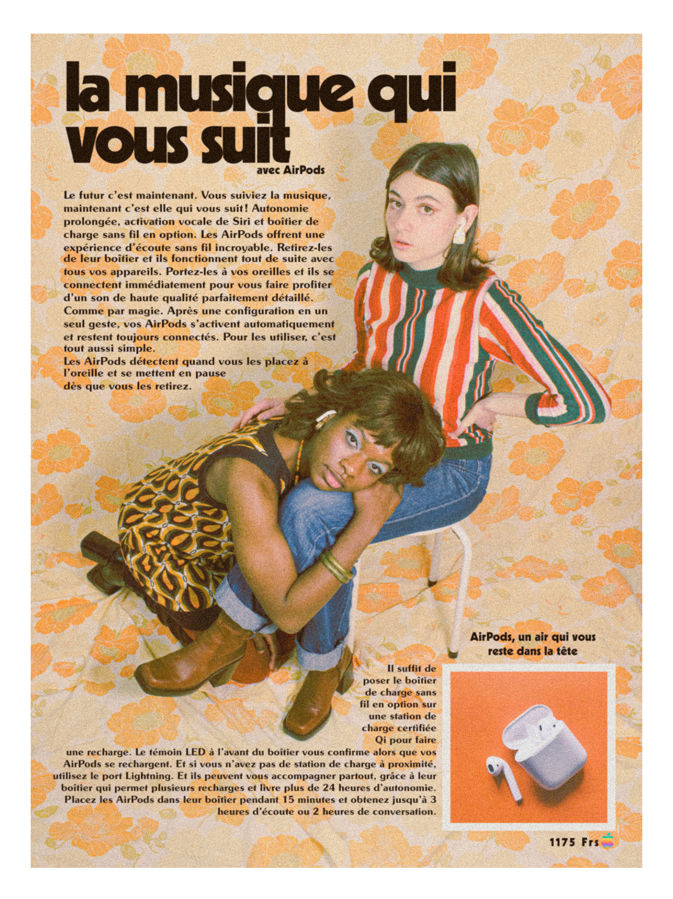
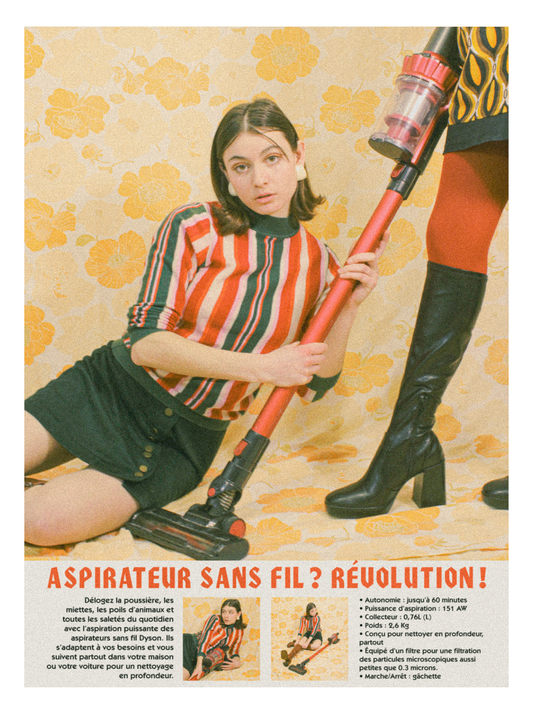
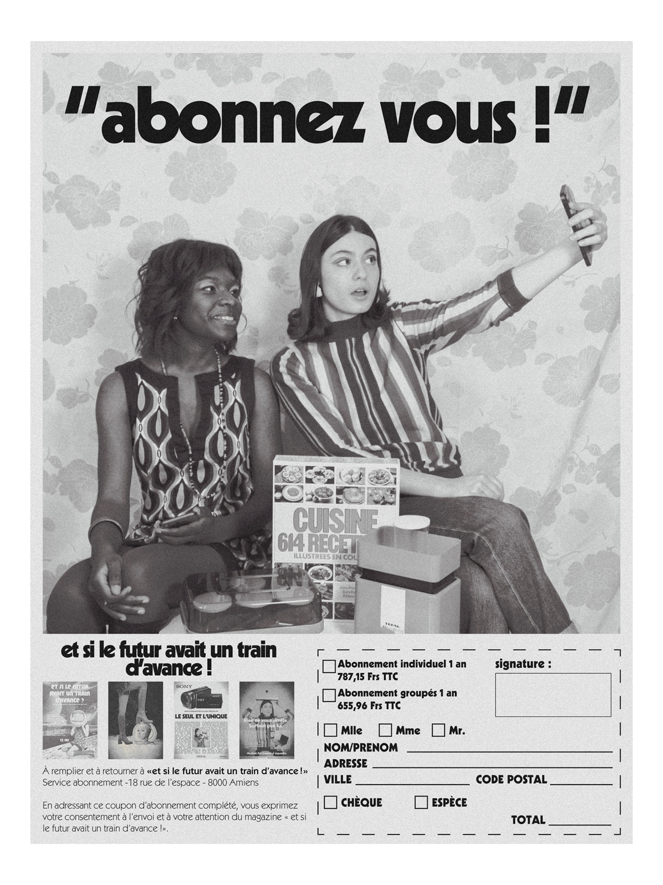
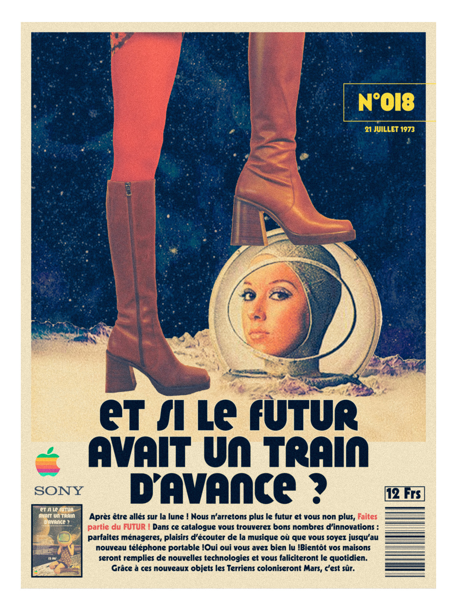

ET SI LE FUTUR AVAIT UN TRAIN D'AVANCE ?
Sujet : Créer un anachronisme avec un objet du quotidien dans une décénié passée.
2023
Ici, je mets en scène nos objets électroniques high-tech dans la décennie des années 70 dans le but de créer des affiches et un catalogue de vente. Je me base sur l’obsession de l’esthétisme futuriste et la conquête spatiale en créant un magazine qui prône l’arrivée du futur dans nos maisons.







